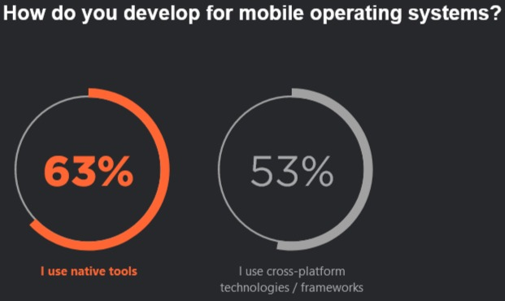
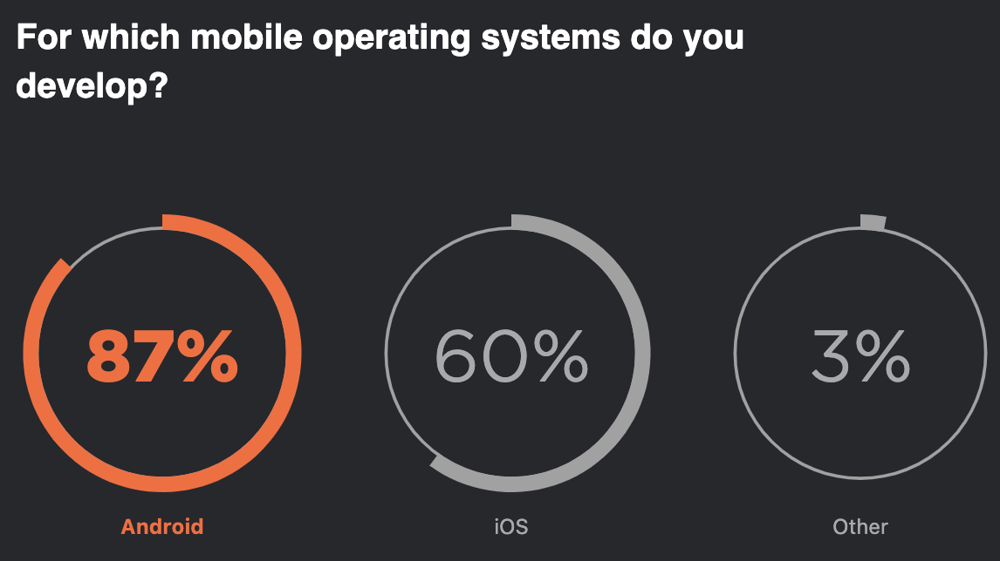
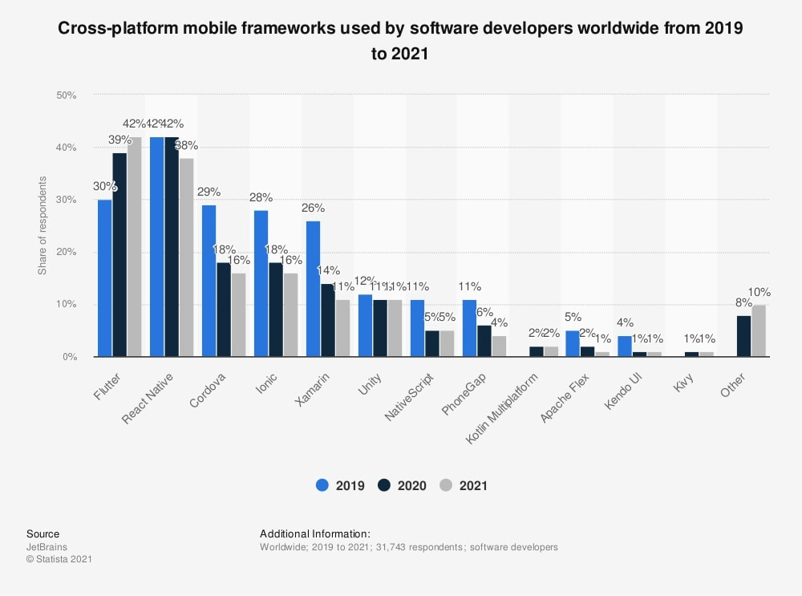
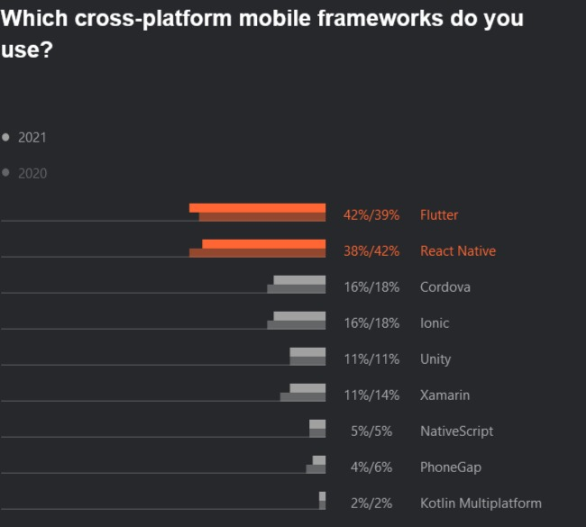
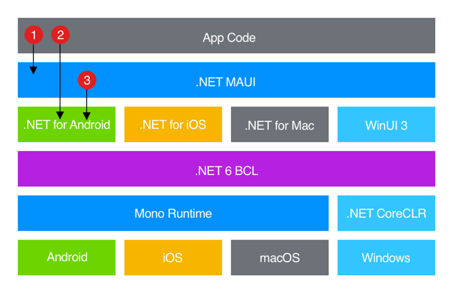
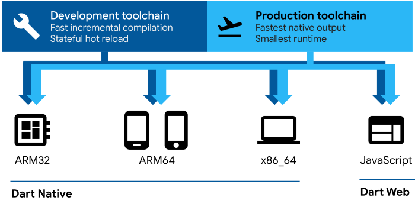
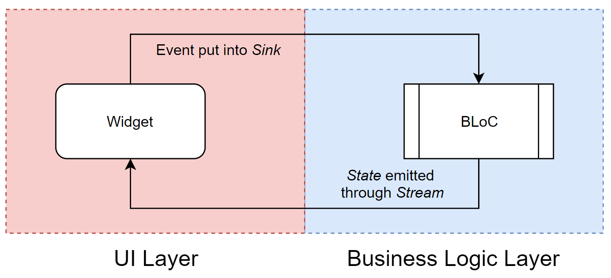
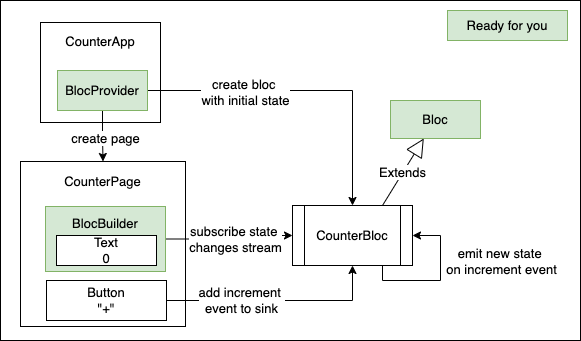

### Going mobile “This ‘telephone’ has too many shortcomings to be seriously considered as a means of communication. The device is inherently of no value to us.” — A memo at Western Union, 1876 (or 1878) Jukka Nikki, Amiga programmer
## "Telephone" is still complex - limited: memory, disk, battery, screen size, .. - fragmented: new and old, premium and basic devices, many os versions, vendors, .. - connected: speed and data availability vary - secured: use of device capabilities only if user allows access, rights can be revoked at any point - sandboxed/realtime: process can be killed by os at any point if os needs resources
#### [Traditional way: Native development](https://github.com/devonfw-forge/devon4flutter-non-bloc-arch/wiki/110-Under-the-Hood) <img alt="native rendering" src="images/app-native-rendering.png" width="40%"> ["requires different teams, different code bases, different workflows, different tools, etc. Developers want an easier, better way to use a single codebase to build mobile apps for multiple target platforms, and they don’t want to sacrifice quality, control, or performance."](https://docs.flutter.dev/resources/faq#can-i-extend-and-customize-the-bundled-widgets)
## apps vary in many dimensions - essential complexity: high / low - technical complexity: novel / high / some / low - connectivity: used offline / needs net / adaptive - storage: local / network / autosync / realtime - information: strictly private / public / socially shared - locales / languages: one / many / global / RTL - users: few / many / communities / peak usage - user groups: casual / experts / admins
#### popular app development styles | Style | When to consider | | ------ | ------------ | | Web/Hybrid | Web app already exists, mobile app will be simple, we know how JS works (been there, done that). | | Native | Only one platform required, tight platform integration needed, app is novel or technically complex. | | *platform | We need to support several platforms, our app isn't dead simple, we don't want to have team per platform. |
#### Technologies to use | Style | Languages | Environments | | ------ | --------------------- | ------------ | | Web/Hybrid | JS, ES, TS | PWA: Ng, Vue, React, Bridge: ReactNative, Webview: Cordova, Ionic, .. | | Native | Swift, Kotlin | Xcode, Android studio | | *platform | C#, Dart | Xamarin / .Net Maui, Flutter, Unity, .. |
#### [Disclaimer: Embedded WebView might not be for you](https://github.com/devonfw-forge/devon4flutter-non-bloc-arch/wiki/110-Under-the-Hood#embedded-webapp-approach) <img alt="embedded webview" src="images/app-webview-rendering.png" width="40%"> This was fancy at 2010s, but HTML + CSS might not work consistently and performant on every native WebView (legacy & ios alert!) and even [getting it secure might be tricky.](https://blog.ostorlab.co/webviews-security-android-ios.html)
#### As a mobile developer .. | Style | Reconsider & test & decide | | ------ | -----------------------------| | Web/Hybrid | I Love JS. Tip: Select PWA or JS bridge stack. Do Web/Hybrid MVPs as long as needed. Hope it works. | | Native | I know it's technically complex. Native seems only possibility. Tip: Ok, but still .. Do Multiplatform MVP. | | *platform | I value reuse. MVP showed it works for us. Tradeoffs are clear, native skills still needed in team. Tip: Fine to go. |
#### [2021: native development still common](https://www.jetbrains.com/lp/devecosystem-2021/miscellaneous/)   It's hard to say how much of native development could be replaced with multiplatform. It's possible that you needed native 3 years ago, but there's options now. Try it out.
#### Technology trends (2019 - 2021) 
#### [what are my options?](https://www.jetbrains.com/lp/devecosystem-2021/miscellaneous/)  ["Flutter .. has surpassed React Native to become the most popular cross-platform mobile framework. In 2019, it had a 30% share, and it now leads with a share of 42%."](https://www.jetbrains.com/lp/devecosystem-2021/miscellaneous/)
#### where React Native > Flutter - you want to build simple cross-platform apps on mobile and web with a single codebase. - you want to build apps using the native components on iOS and Android. - you’re already familiar with JavaScript and React.js, and you don’t want to learn a new language. [React native should be preferred if there's already front end skills present, and mobile is "nice to have" and not main platform.](https://blog.udemy.com/flutter-vs-react-native/)
#### React Native - [Hello World](https://docs.flutter.dev/get-started/flutter-for/react-native-devs) ``` import React from 'react'; import { StyleSheet, Text, View } from 'react-native'; export default class App extends React.Component { render() { return ( <View style={styles.container}> <Text>Hello world!</Text> </View> );}} const styles = StyleSheet.create({ container: {flex: 1, backgroundColor: '#fff', alignItems: 'center', justifyContent: 'center'}}); ``` HelloWorldApp class extends [React.Component](https://reactjs.org/docs/react-component.html) and implements the render method by returning a view component
#### where Flutter > React Native - your goal is a high-quality, mobile-first app from a single codebase. - UI should be custom, or contains complex animations and interactions. - Part of app requires use if native tools & code (ex. app has apple watch ui using swift ui) [Don’t use Flutter if you need a web-first experience, and mobile is not essential to your strategy.](https://blog.udemy.com/flutter-vs-react-native/)
#### Flutter - [Hello World](https://docs.flutter.dev/get-started/flutter-for/react-native-devs) ``` import 'package:flutter/material.dart'; void main() { runApp( const Center( child: Text( 'Hello, world!', textDirection: TextDirection.ltr, ), ), ); } ``` The Center [widget](https://docs.flutter.dev/development/ui/widgets-intro) becomes the root of the widget tree and has one child, the [Text](https://docs.flutter.dev/development/ui/widgets/text) widget. Flutter UI is [composed](https://docs.flutter.dev/resources/architectural-overview#composition) in a flexible way from high amount of [simple single purpose widgets](https://docs.flutter.dev/resources/faq#can-i-extend-and-customize-the-bundled-widgets). It might look verbose, but it's precise and easy to understand.
#### [Architectures still differ](https://github.com/devonfw-forge/devon4flutter-non-bloc-arch/wiki/110-Under-the-Hood) <img alt="reactive rendering" src="images/app-reactive-rendering.png" width="45%"> <img alt="flutter rendering" src="images/app-flutter-rendering.png" width="45%"> ReactNative js app accesses platform widgets and services using bridge, which reduces performance, but is probably for most projects acceptable. Flutter native app uses own ui components and integrates tightly with platform using method channels.
#### Some more *platform options? | Environment | Notes | | ------------ | ------ | | Xamarin | EOL 2024. ["support will end on May 1, 2024 for all Xamarin SDKs. "](https://dotnet.microsoft.com/en-us/platform/support/policy/xamarin) | | .NET MAUI | ["for creating mobile and desktop apps with C# and XAML."](https://github.com/dotnet/maui) | | Flutter | ["for mobile, web, and desktop from a single codebase."](https://github.com/flutter/flutter) | | Unity | For special cases only? ["create apps for Android, iOS, and Windows."](https://www.androidauthority.com/make-unity-apps-1073017/) |
## Xamarin => .NET MAUI [.NET MAUI 6 was published 23rd may 2022](https://devblogs.microsoft.com/dotnet/introducing-dotnet-maui-one-codebase-many-platforms/) - ["built on top of Xamarin.Forms"](https://www.syncfusion.com/blogs/post/xamarin-versus-net-maui.aspx) - ["just the beginning of our journey to create a desktop and mobile app experience that delights .NET developers."](https://devblogs.microsoft.com/dotnet/introducing-dotnet-maui-one-codebase-many-platforms/) - ["does not bring many new innovations to the cross-platform domain.](https://protovate.com/blog/tech-talk-flutter-3-vs-net-maui/) - [".NET MAUI is, at least in its current state, bit of a mess."](https://medium.com/pragmatic-programmers/google-flutter-vs-microsoft-net-maui-which-one-will-i-use-3015ec3f99a5)
#### .Net MAUI targets <img alt=".NET MAUI" src="images/maui.png" width="40%"> ["single shared project that can target Android, iOS, macOS, and Windows."](https://learn.microsoft.com/en-us/dotnet/maui/what-is-maui)
#### .Net MAUI architecture  ["you write code that primarily interacts with the .NET MAUI API (1). .NET MAUI then directly consumes the native platform APIs (3). In addition, app code may directly exercise platform APIs (2), if required."](https://learn.microsoft.com/en-us/dotnet/maui/what-is-maui)
## Flutter [Flutter 1.0 was published 04th dec 2018](https://developers.googleblog.com/2018/12/flutter-10-googles-portable-ui-toolkit.html) When flutter was fresh it got critic because of - low availability of experienced Dart programmers - compromised quality of some provided libraries - limited amount of libraries at it's core - Fast pace of change And then 2021 Flutter 2.0 introduced [sound null safety](https://dart.dev/null-safety), which broke whole ecosystem and [everyone was migrating at the same time](https://dart.dev/null-safety/migration-guide). Flutter 3.0 came out 2022.
#### UI = f(state) [Flutter is a reactive, pseudo-declarative UI framework](https://docs.flutter.dev/resources/architectural-overview). Developer provides a mapping from App state to UI state, and the framework updates UI at runtime when the App state changes. This model is inspired by [work that came from Facebook for their React framework](https://www.youtube.com/watch?v=x7cQ3mrcKaY&t=2s), which includes a rethinking of many traditional design principles.
<img alt="flutter ui tree" src="images/flutter-ui-trees-white.png" width="80%"> ["It would be a rare application that drew only a single widget. An important part of any UI framework is therefore the ability to efficiently lay out a hierarchy of widgets, determining the size and position of each element before they are rendered on the screen."](https://docs.flutter.dev/resources/architectural-overview#layout-and-rendering)
<img alt="flutter arch" src="images/flutter-architecture.png" width="50%"> ["extensible, layered system exists as a series of independent libraries that each depend on the underlying layer .. every part of the framework level is designed to be optional and replaceable."](https://docs.flutter.dev/resources/architectural-overview)
#### Flutter: missing pieces? Flutter, like [React](https://reactjs.org/), is library for building user interfaces - it's very focused single purpose solution without compromises - some [1st party plugins](https://github.com/flutter/plugins) from flutter team are included - use them or not (very short list) - plenty of [3rd party plugins](https://pub.dev/) are also present - best are [flutter favorites](https://docs.flutter.dev/development/packages-and-plugins/favorites) (very long list) - and nothing prevents you from implementing your [own plugins](https://docs.flutter.dev/development/packages-and-plugins/developing-packages) (ask yourself: is it worth sharing?)
 ["During development .. apps run in a VM that offers stateful hot reload of changes without needing a full recompile. For release .. apps are compiled directly to machine code."](https://docs.flutter.dev/resources/architectural-overview)
#### [Dart](https://dart.dev/overview) - with C & [C#](https://www.toptal.com/dart/dartlang-guide-for-csharp-java-devs) & [JS](https://blog.codemagic.io/dart-vs-javascript/) & Java in Algol Family ``` import 'dart:math'; extension MyIterable on Iterable<int> { int get big => reduce(max); int get small => reduce(min); } void main() { var numbers = [25,42,13,40]; print('Solution is ${numbers.big} and not ${numbers.small} .'); int? aNullableInt = null; print('Problem is $aNullableInt.'); } ``` Dart offers [sound null safety](https://dart.dev/null-safety) since 2.12, meaning that values can’t be null unless you say they can be. Dart is at [Tiebo index](https://www.tiobe.com/tiobe-index/) at position 33. Try it using [DartPad](https://dartpad.dev/)
## Flutter platforms | Environment | Versions | | ------------ | -------- | | Android | API 16 (Android 4.1) & above | | iOS | iOS 11 & above | | Linux | Debian, 64-bit | | macOS | El Capitan (10.11) & above | | Web | Chrome >= 84, Firefox >= 72.0, Safari on El Capitan & above, Edge >= 1.2.0 | | Windows | Windows 7 & above |
<img alt="flutter platform channels" src="images/flutter-platform-channels.png" width="40%"> [Flutter allows you to call into custom code through a platform channel, which is a mechanism for communicating between your Dart code and the platform-specific code of your host app.](https://docs.flutter.dev/resources/architectural-overview#platform-channels)
#### [C interop using dart:ffi](https://dart.dev/guides/libraries/c-interop) - use the [dart:ffi](https://api.dart.dev/stable/2.18.2/dart-ffi/dart-ffi-library.html) library to call native C APIs, and to read, write, allocate, and deallocate native memory. - use the [package:ffigen](https://pub.dev/packages/ffigen) binding generator to automatically create FFI wrappers from C header files. - how you bundle and load a C library depends on your platform and the type of library.
#### ["Architecture is about the important stuff. Whatever that is." - Ralph Johnson](https://martinfowler.com/architecture/) - Within the Flutter community, [State Management](https://docs.flutter.dev/development/data-and-backend/state-mgmt/intro) and [Architecture](https://martinfowler.com/architecture/) are often used synonymously - [Any architecture for a Flutter application](https://github.com/devonfw-forge/devon4flutter-non-bloc-arch/wiki/200-Architecting-a-Flutter-App#state-management-vs-architecture) will have [some sort of State Management](https://docs.flutter.dev/development/data-and-backend/state-mgmt/options) - [State Management](https://docs.flutter.dev/development/data-and-backend/state-mgmt/intro) is not an [architecture by itself](https://bloclibrary.dev/#/architecture), even if bloc library documentation contains [architecture proposition]((https://bloclibrary.dev/#/architecture)).
#### [Bloc state management library](https://bloclibrary.dev/#/)  Use [Bloc](https://bloclibrary.dev/#/whybloc) to separate [presentation](https://bloclibrary.dev/#/architecture?id=presentation-layer) from [business logic](https://bloclibrary.dev/#/architecture?id=business-logic-layer), facilitating testability and reusability. Each Bloc has one input (sink) and output ([stream](https://dart.dev/tutorials/language/streams)), but can emit (output) several types of states and handle (input) several types of events. [Naming things](https://bloclibrary.dev/#/blocnamingconventions) consistently is vital.
#### [Example: Counter app](https://gist.github.com/felangel/fc8230776591f0297e6a1d1b5ef46a6c)  "+" adds increment event to sink, counter is rendered when state is received from stream. [BlocProvider](https://pub.dev/documentation/flutter_bloc/latest/flutter_bloc/BlocProvider-class.html) controls lifecycle of bloc instance.
#### [Example: CounterBloc](https://gist.github.com/felangel/fc8230776591f0297e6a1d1b5ef46a6c) ``` /// Base event and Increment Event abstract class CounterEvent {} class Increment extends CounterEvent {} /// handles converting `CounterEvent`s into `int`s. class CounterBloc extends Bloc<CounterEvent, int> { /// The initial state of the `CounterBloc` is 0. CounterBloc() : super(0) { /// When `Increment` event is added, /// current `state` is accessed via the `state` property /// and a new state is emitted via `emit`. on<Increment>((event, emit) => emit(state + 1)); } } ``` on increment event get current state, update it and emit new state. ["on" exists since Bloc 7.2.](https://verygood.ventures/blog/how-to-use-bloc-with-streams-and-concurrency)
#### [Example: CounterApp](https://gist.github.com/felangel/fc8230776591f0297e6a1d1b5ef46a6c) ``` class CounterApp extends StatelessWidget { @override Widget build(BuildContext context) { return MaterialApp( home: BlocProvider( /// DI: provide always same instance create: (_) => CounterBloc(), /// create bloc child: CounterPage(), /// Actual UI ), ); } } void main() => runApp(CounterApp()); // Creation of app ``` [BlocProvider](https://pub.dev/documentation/flutter_bloc/latest/flutter_bloc/BlocProvider-class.html) takes care of creating single instance of [Bloc](https://pub.dev/documentation/bloc/latest/bloc/Bloc-class.html), lazily by default.
#### [Example: CounterPage](https://gist.github.com/felangel/fc8230776591f0297e6a1d1b5ef46a6c) ``` class CounterPage extends StatelessWidget { @override Widget build(BuildContext context) { return Scaffold( appBar: AppBar(title: const Text('Counter')), body: Center( child: BlocBuilder<CounterBloc, int>( builder: (context, count) { return Text('$count', style: Theme.of(context).textTheme.headline1); },), ), floatingActionButton: FloatingActionButton( child: const Icon(Icons.add), onPressed:()=>context.read<CounterBloc>().add(Increment()), ),);}} ``` [BlocBuilder](https://pub.dev/documentation/flutter_bloc/latest/flutter_bloc/BlocBuilder-class.html) draws ui when state changes. CounterBloc can be found from [BuildContext](https://api.flutter.dev/flutter/widgets/BuildContext-class.html) and has [add](https://pub.dev/documentation/bloc/latest/bloc/Bloc/add.html) method which is sink for events.
#### [Bloc within Layered architecture](https://github.com/devonfw-forge/devon4flutter-non-bloc-arch/wiki/220-BLoC) <img alt="bloc as part of arch" src="images/flutter-bloc-architecture-layers.png" width="60%">
#### [Sources: by layer/type+domain](https://github.com/devonfw-forge/devon4flutter-non-bloc-arch/wiki/400-Conventions) ``` lib | ├── blocs ├── data ├── models ├── repositories ├── ui | ├── pages | | ├── home_page.dart | | └── ... | └── widgets | ├── image_card.dart | └── ... └── main.dart ``` Stick to one way of organizing files: [by feature/type](https://medium.com/flutter-community/scalable-folder-structure-for-flutter-applications-183746bdc320) is viable option if features can be clearly defined
#### Dart - sister of C & C# & JS & Java ``` void main() { int aNonNullableInt = 42; print('Solution is $aNonNullableInt.'); int? aNullableInt = null; print('Problem is $aNullableInt.'); } ``` Dart offers [sound null safety](https://dart.dev/null-safety) since 2.12, meaning that values can’t be null unless you say they can be. Experiment further using [DartPad](https://dartpad.dev/) Dart is at [Tiebo index](https://www.tiobe.com/tiobe-index/) at position 33.
## DX: Nulls Mentioned native and multiplatform languages are statically typed with native null safety support - C# (Xamarin, .net MAUI, Unity) - Dart (Flutter) - Kotlin (Android Native) - Swift (iOS Native) https://en.wikipedia.org/wiki/Nullable_type Duck typing is kinda not static and not very safe. JS & ES & TS can be used in evil ways. With power comes responsibility.
## Examples - [wisgen, 2019, no null safety used](https://github.com/Fasust/wisgen) - [i/o Pinball, 2022](https://verygood.ventures/success-stories/i-o-pinball) - [ranch game, 2022](https://verygood.ventures/blog/very-good-ranch-game)
## Flutter Recap - Flutter UI is reactive and declarative - Almost everything is a widget - Dart enables hot reload, JIT and AOT - Dart is easy to learn and has sound null safety - Usage of native / foreign code is supported - Architecture != State Management, you need both - Bloc is popular state management option - React/ReactNative have similarities to Flutter - Starting with MVP is good decision